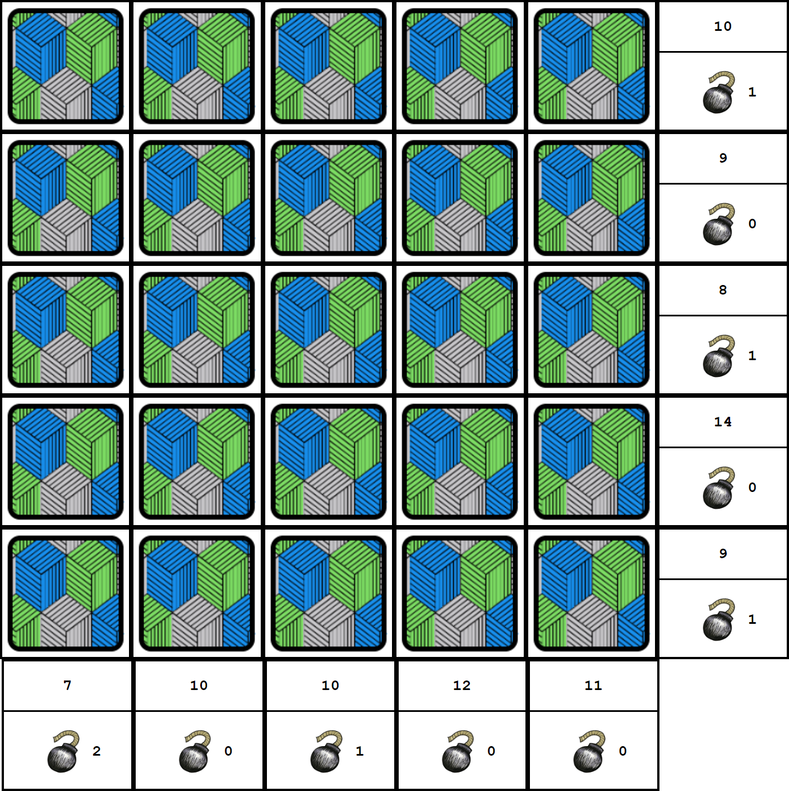

About Bomb Flip
Bomb Flip is a web-based clone of Voltorb Flip, a mini-game from Pokemon HeartGold/SoulSilver.
The gameboard consists of a 5x5 grid of cards. Behind each card is either a 1, 2, 3, or a bomb. The object of the game is to reveal all of the numbered cards to score points without clicking a bomb. To do this, the player is given information on the number of points and bombs in each row and column.
Future Plans
Planned improvements for Bomb Flip are to refractor the game script to utilize ReactJS and/or jQuery. Once this is improved, I am also planning on implementing unit tests with Mocha.